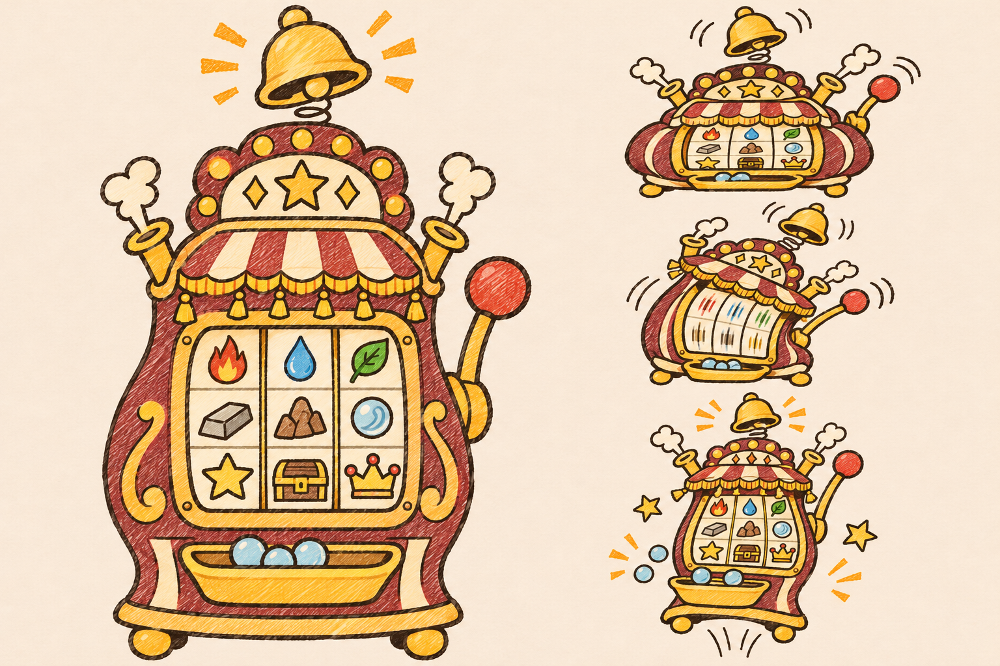
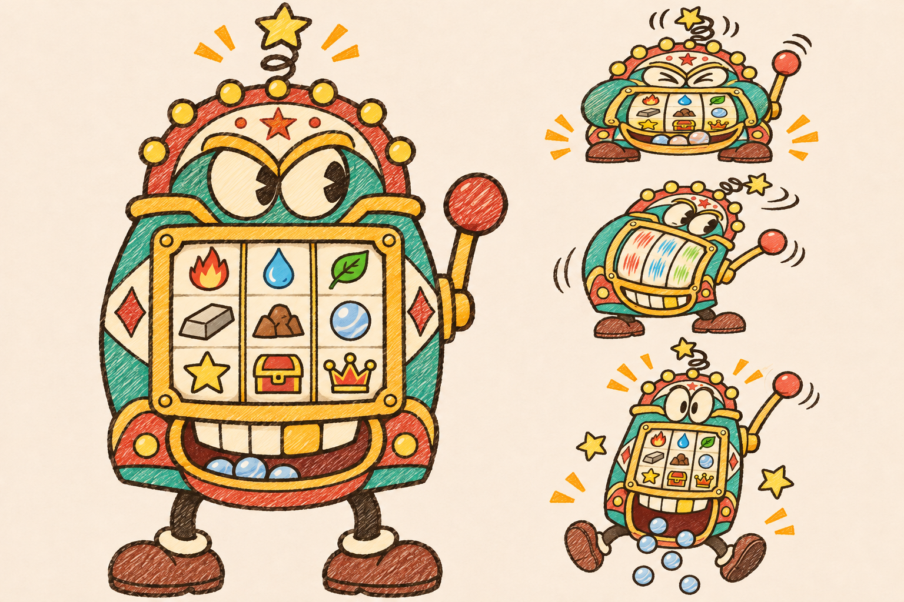
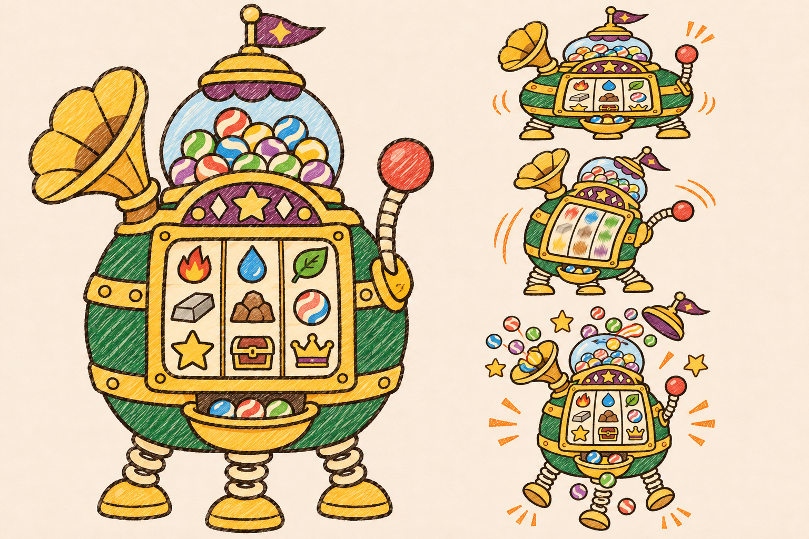
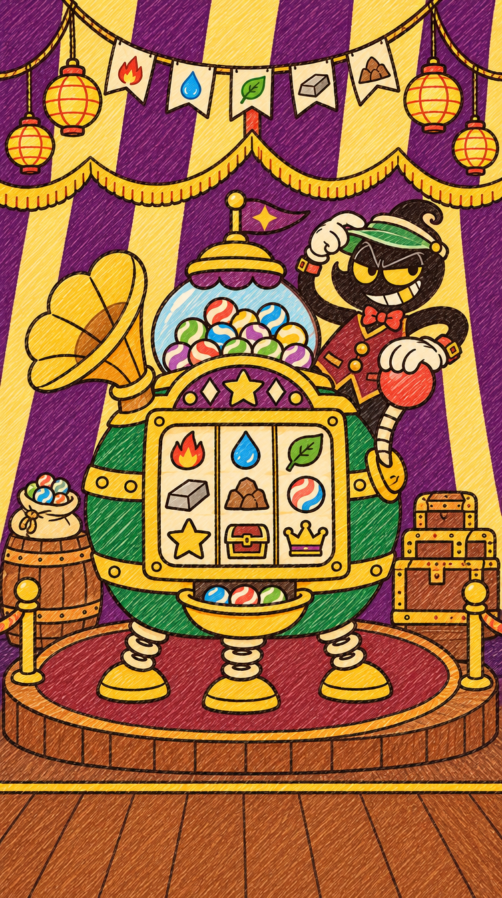

Hội Máy Quả: máy quả sống
Concept chờ duyệt, 2026-11-26. Bấm ảnh để phóng to. Ảnh gen bằng Magnific GPT 2.6 (4 tờ, 380 credit).
Tôi hiểu ý bạn thế này
- Lều Hội Máy Quả bỏ khung 9 ô giấy hiện nay, thay bằng một cái máy quả vẽ riêng, rig xương, là nhân vật chính của màn.
- Máy luôn động: đứng thì nhún theo nhịp, lúc quay thì lắc hai bên, cuộn dừng thì giật, trúng thì nhảy, jackpot thì nhảy lên lắc giữa không trung.
- Học cách diễn của hoạt hình ống cao su thập niên 1930 (kiểu Cuphead): chỉ học nguyên tắc chuyển động, hình là thiết kế riêng của mình.
1. Ba hướng thiết kế



Vì sao tôi nghiêng về C
- Chân lò xo làm "nhún nhún" và "nhảy lên" có lý do vật lý, nhìn là hiểu; A phải nhún bằng cả thân, B nhún bằng đầu gối.
- Hũ kính trên đầu là Hũ bàn của lều: mức bi trong hũ hiện đúng số bi đang tích, jackpot thì nắp bật, bi phun ra. Một vật trang trí gánh luôn một phần giao diện.
- Nhiều thứ đung đưa trễ nhịp nhất (cờ, nắp, bi trong hũ, loa kèn, cần, ba lò xo), đúng thứ làm rig trông "sống".
- Không mặt nên Lão Mực vẫn là gương mặt duy nhất của đảo. Muốn máy có tính cách hơn thì ghép mắt của B vào C (nói tôi gen thêm).
- Xanh lục + vàng nổi trên lều tím vàng của đảo; A đỏ rượu dễ chìm vào thảm và gi lê Lão Mực.
2. Cảnh thử (hướng C)

Màn chơi sẽ dựng thế này
- Lều sọc tím vàng (đúng lều máy quả ngoài đảo), máy đứng trên bục gỗ giữa màn, chiếm khoảng 80% bề ngang; ô cuộn 3 × 3 nằm giữa, đủ to để đọc trên điện thoại.
- Lão Mực (rig có sẵn) đứng sau vai phải máy. Bấm Quay thì tay ống cao su của ông kéo cần; ông dõi từng cuộn, mỉa khi trượt, ngã ngửa khi jackpot.
- Hình trên cuộn do game vẽ (dải thật của lõi
Slots.cs, trượt dọc, có mặt nạ cắt), bám theo xương thân máy nên máy méo thì ô cuộn méo theo. Ảnh máy đem rig để ô cuộn trống. - Phía trên: 4 bậc cược, tờ tin. Phía dưới (sàn gỗ để trống): nút Quay, Quay nhanh, Bảng trả. Dòng kể đường thắng hiện trên biển gỗ nhỏ, không phải chữ trôi.
- Nền gen riêng không có máy, không có Lão Mực; rào dây, thùng bi, rương là nền tĩnh.
3. Thử nhịp chuyển động
Bản thử nhịp: méo cả tấm hình concept theo từng lát ngang, chưa tách mảnh. Rig thật sẽ có xương riêng cho từng phần nên cờ, nắp, cần, loa kèn sẽ trễ riêng từng cái.
đứng chờ: nhún theo nhịp
Học gì từ hoạt hình ống cao su
- Không bao giờ đứng im: đứng chờ cũng nhún theo nhịp nhạc (2 nhịp mỗi giây), lâu lâu có một trò phá nhịp.
- Lấy đà ngược chiều trước mọi cú lớn: nghiêng ra xa cần trước khi bị giật, nén bẹp trước khi nhảy.
- Nén giãn mạnh, giữ thể tích: bẹp thì phình ngang, vọt lên thì dài và gầy.
- Dáng giữ rồi bật: vài khung giữ dáng, 1–2 khung chuyển; không trôi đều. Vẽ theo nhịp 24 khung/giây.
- Rung bằng hai dáng đổi nhau mỗi 2 khung (lúc gồng, lúc cuộn chạy), không dùng nhiễu.
- Quá đà rồi mới về, phần ngọn (cờ, nắp, chuông, cần) trễ sau thân và văng ngược chiều.
- Treo giữa không trung: lên tới đỉnh thì dừng lại lắc mấy cái rồi mới rơi.
4. Bộ clip định làm
| Clip | Lúc nào | Dài | Diễn |
|---|---|---|---|
idle | chờ người chơi | 2,0 s lặp | nhún 4 nhịp trên lò xo; cờ, cần, bi trong hũ lệch pha; phá nhịp: loa kèn "ợ" một viên bi lên rồi hứng lại |
pull | bấm Quay | 0,5 s | nghiêng ra xa cần (3 khung) → bị giật về phía cần, bẹp xuống → bật lại quá đà; cuộn giật lùi một chút rồi mới chạy |
spin | cuộn đang chạy | 0,5 s lặp | lắc hai bên 2 lần mỗi giây, thân rung hai dáng đổi nhau, bi trong hũ nhảy loạn, loa kèn phì hơi |
stop_1..3 | từng cuộn dừng | 0,3 s | cú "cạch": giật về phía cuộn vừa dừng, bẹp 2 khung, nảy tắt dần; cuộn 3 mạnh nhất |
tease | hai cuộn đầu đã khớp | 0,6 s | nín thở: vươn cao dần, rung nhanh hơn, cuộn 3 chạy lâu hơn (chỉ khi hai cuộn đầu khớp thật, không giả suýt trúng) |
lose | trượt | 0,9 s | nhổm lên hy vọng 3 khung → xẹp, nghiêng rũ, loa kèn cụp → về |
win | trúng đường | 1,2 s | nén → nhảy hai cái (cái sau nhỏ hơn), khay nhả bi; ô đường thắng nháy |
free | 3 Rương | 1,0 s | xoay một vòng trên một chân lò xo, nắp hũ nhấp nhổm; các lượt miễn phí sau dùng spin nhanh |
jackpot | 3 huy hiệu / thắng lớn | 3,8 s | gồng bẹp run (0,5 s) → vọt lên dài gầy → treo trên không lắc 6 cái, nắp hũ bật, bi phun từ hũ và loa kèn → rơi bẹp rung màn → nảy → nhảy múa lắc hai bên → về |
appear | vào lều | 1,0 s | đang ngủ gật (xẹp, nghiêng) → giật mình bật thẳng, phất cờ chào |
Bi phun, sao, tia nháy là lớp hiệu ứng của game, không vẽ trong rig; rig để xương ở miệng loa kèn, miệng hũ, khay và sự kiện trong clip.
5. Tách mảnh và xương (hướng C)
| Mảnh | Xương | Để làm gì |
|---|---|---|
| Thân bụng tròn (một lưới liền) | hông → bụng → vai, lưới có trọng số | nén giãn, uốn cong hai bên |
| Khung ô cuộn + ô cuộn trống | bám xương bụng | game vẽ hình cuộn vào đây |
| Ba chân lò xo, ba đế | mỗi chân 3 đốt, đế có IK bám đất | nhún, co, bật; đế đứng yên khi thân lắc |
| Hũ kính, lớp bi trong hũ (2–3 lớp), nắp, cờ | hũ 1 xương; bi mỗi lớp 1 xương; nắp 1; cờ 3 đốt | bi rung trễ, nắp bật, cờ phất; mức bi đổi theo Hũ bàn |
| Loa kèn | cổ 2 đốt + miệng | gật gù, phì hơi, phun bi (xương miệng cho hiệu ứng) |
| Cần + núm đỏ | bệ → 3 đốt → núm | kéo xuống, bật lại, rung dư; tay Lão Mực bám núm |
| Khay bi + bi trong khay | khay 1 xương, bi 1 xương | khay hất khi nhả thưởng |
| Đai vàng, đinh tán | dính lưới thân |
Theo luật rig của dự án: ảnh đem rig gen không viền, tách mảnh trên nền xanh lơ; viền mực vẽ sau cùng khi bạn đã chốt animation.
6. Cần bạn chốt
- Hướng nào: A, B, C, hay ghép (ví dụ C + mắt của B, C + chuông của A)?
- Hũ kính là Hũ bàn (mức bi theo số đang tích): đồng ý không?
- Ai kéo cần: Lão Mực kéo khi bấm nút Quay (như kế hoạch D5), hay người chơi tự vuốt cần xuống?